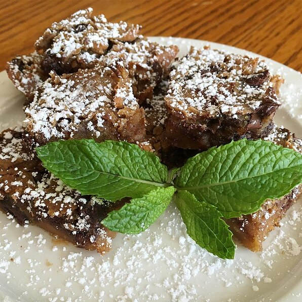

Chocolate chickpea brownie
Recipe for chocolate chickpea brownie

Description
Need a chocolate fix? Sink your teeth into these decadent, gluten-free and healthy chocolate chickpea brownies guilt-free!
Ingredients
- cooking spray
- 1 (15 ounce) can garbanzo beans, drained and rinsed
- ½ cup almond butter
- ⅓ cup maple syrup
- 2 teaspoons almond extract
- ¼ teaspoon baking soda
- ¼ teaspoon baking powder
- ½ teaspoon salt
- ⅓ cup miniature chocolate chips
Directions
- Preheat oven to 350 degrees F (175 degrees C). Spray an 8-inch square baking pan with cooking spray.
- Blend garbanzo beans, almond butter, maple syrup, almond extract, baking soda, baking powder, and salt together in a blender or food processor until batter is smooth; pour into a bowl. Fold chocolate chips into batter and pour into the baking dish.
- Bake in the preheated oven until edges begin to pull away from sides and center is set, 20 to 25 minutes. Cool brownies in the pan for 20 minutes before cutting into 16 squares using a plastic knife.
Nutrition facts
Per Serving: 106 calories; protein 2.2g; carbohydrates 12.3g; fat 5.9g; sodium 188.4mg.